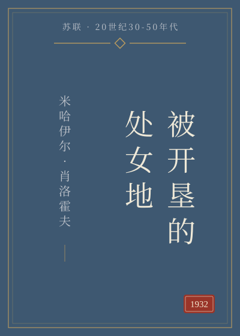

被开垦的处女地
一、基本信息
| 作者 | 肖洛霍夫 |
|---|---|
| 成书/出版 | 1932-60年（作者页注记：Britannica——被开垦的处女地 (1932—60)） Mikhail Sholokhov — Encyclopaedia Britannica（百科全书） |
| 国别/地区 | 苏联 |
| 时代 | 现当代 · 20世纪30-50年代 |
| 体裁 | 长篇小说 |
| 语言 | 俄语 |
《被开垦的处女地》集体化图（主题·结构图）
二、创作背景
作者页注记：被开垦的处女地 (1932—60)——'集体化小说（Britannica）'。
Britannica（B098）：肖洛霍夫——1965诺奖；哥萨克作家。
题材（通说待核）：顿河集体化运动——农业集体化的村庄两卷。
三、内容脉络
（通说待核）集体化：富农清算与集体农庄建立。
（通说待核）梅霍夫村的两条路线。
四、主要人物表
| 人物 | 身份 | 说明 |
|---|---|---|
| 达维多夫 | 工人工作队长 | （通说待核） |
| 梅霍夫村 | 集体化的舞台 | （通说待核） |
五、主题与艺术特点
- 集体化的叙事（B注记：集体化小说）。
- 哥萨克社会的转型（B098 语境）。
- 政策文学的内部张力（通说待核）。
六、影响与评论
- Britannica：1965诺贝尔文学奖（B098）。
Mikhail Sholokhov — Encyclopaedia Britannica（百科全书） - Britannica：《静静的顿河》——苏联最广泛阅读（B098 交叉）。
Mikhail Sholokhov — Encyclopaedia Britannica（百科全书）
七、阅读建议
难点
- 农业集体化史。
- '政策文学'的评价史。
- 《被开垦的处女地》中译本（人民文学等——通说待核）。
- 俄文原版。
肖洛霍夫第二作；与《静静的顿河》《一个人的遭遇》对读。
八、待核实
- 达维多夫人名核对（通说）。
- 两部年份（1932/1960）核对（B注记）。
- '剽窃疑云'与本作关系待核（B098 载《静静的顿河》相关——本作不涉）。